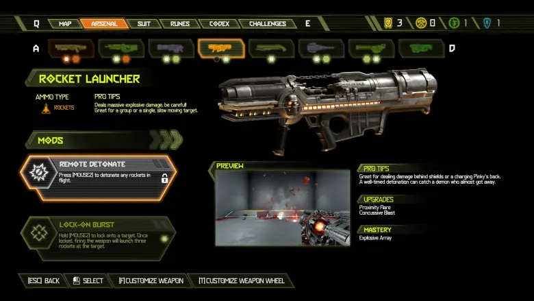
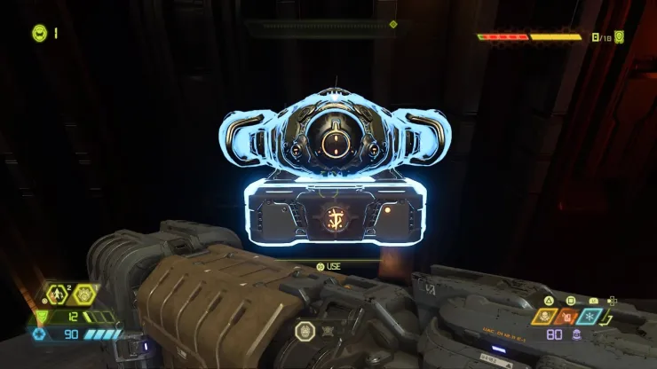
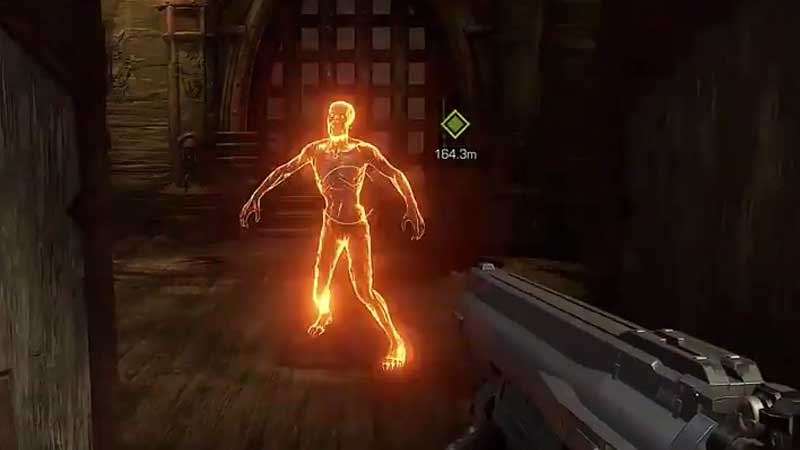
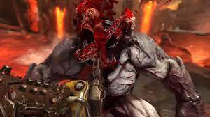
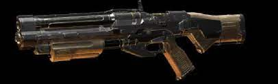
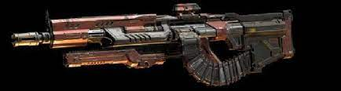
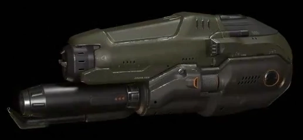

GUIDE TO DOOM ETERNAL:
THE BEGINNER
DECEMBER 8, 2021 - AARON DAYRIT
Earth is in shambles due to the invasion of Hell's forces. No army, no legion, no human has stood a chance. So we send upon them, only you, Slayer. That is your purpose.
Doom Eternal, the first-person-shooter experience with a simple task; kill the demons. Luckily you've remembered something crucial. You've just walked into a franchise notorious for its difficulty.
You've come to the right place. To kill the demons, you must first need to learn how. This guide will cover basic information for the average beginner. All this will get you through your first level on "Hurt Me Plenty" difficulty or medium mode.
Remember that this game is not for the faint of hearts.
Content of this guide:
- Hardware requirements
- Basics
- Weapon types
- Demon types
- Other/Advanced tips
Necessary Hardware
| Processor | Memory | Graphics | Storage | Os |
|---|---|---|---|---|
| -Intel Core i5 @ 3.3GHz
-Ryzen 3 @ 3.1GHz |
-8 GB RAM | -GTX 970 (4GB)
-GTX 1060 (6GB) -RX 470 (4GB) |
-50GB | -64-bit processor and operating system |
Before you even begin to think about playing the game, get a device capable of running it. Doom has a long history of being well optimized on a wide range of devices. These are the minimum specs.
There are extra precautions you can take if your scenario is extreme or you are stubborn. If you plan on playing the game on integrated graphics, it's possible with some adjustments through the in-game console. Here's a tutorial if you are interested.
If you are planning to play on a console, you're in luck. All current-gen consoles are easily able to run the game.
Basics
Movement
Doom is all about speed, and you need to take advantage of yours. Strafing in a circular motion around enemies is extremely useful in the beginning levels. Using this lateral speed allows you to avoid incoming projectiles.
You get a double jump by default. The jump is another way to avoid incoming projectiles, enemies and cover ground vertically. Often beginners stick themselves to the ground causing hordes of enemies to pile.
You have limited vision, and you don't have eyes at the back of your head. Get out of the way before they have the chance.
Weapons:
Each weapon in this game has its quirk and purpose. You use each of the guns in two ways.
Primary Fire
The primary fire is through your standard shoot button on your mouse/controller. This can be a simple shotgun blast or automatic rifle shot.
Weapon mod/secondary fire
The weapon mod is through your secondary-fire button on your mouse/controller. These mods are unique to each weapon and enhance its utility. They range from a shield that blocks all projectiles or a beam that can stun a demon in place.They are obtained through field drones found around a level.
-Optional weapon mods in weapon menu
-Field-drone with weapon mod
Glory-kills
A glory-kill is a violent finisher done to an enemy at low health. Glory-kills replenish you health. You are alerted of a glory kill when an enemy begins to flash blue. From there, you choose to finish the enemy through a button assigned to glory-kill. You have a limited time to act.
-Enemy ready to glory kill
Chainsaw
The chainsaw is a tool. You use it to replenish your ammo. "Chainsawing" an enemy will also give you a brief window of invisibility to clear you from danger. Chainsaw fuel regenerates over time for one charge. Picking up more fuel allows you to use the chainsaw on bigger demons. The chainsaw is the primary way to replenish ammo.
-Chainsaw kill on a demon
Weapon types
Combat Shotgun:
-Combat shotgun (sticky bombs mod)
The combat shotgun is your starting weapon. It has a short range, weak damage, and a very high bullet spread.
Weapon mods:
Sticky bombs
Sticky bombs convert standard shotgun pellets into explosive AOE projectiles that stick on surfaces. Effective against enemy weak points.
Full auto
Shoot shotgun pellets automatically, without the reload of the shotgun.
Tips:
Try using the sticky bombs as a replacement for the primary fire. They reload fast and consume the same amount of ammo.
Use the full auto as a high damage dealer early game. It can deal very high damage to a heavy demon up close.
Heavy Cannon:
-Heavy Cannon (precision bolt mod)
A fully automatic rifle shot. This is accurate at most ranges.
Weapon mods:
Precision bolt:
Transform the primary fire into a sniper when in use. This is very accurate and does good damage. Very effective against enemy weak points.
Micro Missiles:
Adds a reserve of micro missiles to the gun. When activated, a barrage of micro missiles is released, dealing very high damage.
Tips:
When the combat shotgun's sticky bombs are reloading, switch to the primary fire of the heavy cannon to continue the damage early game.
Grenade Launcher:
-Shoulder mounted grenade launcher
On your shoulder is a grenade launcher that replenishes grenades over time. It's mounted on your shoulder, meaning you can shoot a grenade while shooting your weapons.
Tips:
The grenades cause a falter. This stuns a demon for an opening to attack.
Demon types:
On the first level (Hell on Earth), there are seven demon types and three enemy categories:
Fodder demon
Fodder enemies are demons used in hordes to harass the player. More importantly, fodder demons only require one chainsaw fuel to kill. They are your primary ammo source when running low.
Zombie
Zombies are the weakest enemies in the games: They move slowly and melee you up close.
Imp
Imps are extremely volatile. They can run, climb and jump. They pummel you up close and have a strong projectile with pinpoint accuracy.
Soldier (blaster)
Soldiers are very slow but make up for it with constant automatic projectiles.
Gargoyle
Gargoyles are as fast as imps, with wings attached to their back. Gargoyles often stay on the ground but prefer to harass you up close. At a far ranch, they hover in the air and charge for a barrage of projectiles.
Ambient demon
Ambient enemies are stationary enemy types.
Tentacle
Going up close to a tentacle spawn will cause one to sprout. It will have a brief window to attack you and to be attacked.
Heavy demon
Heavy enemies are much stronger enemy types. They have a bigger arsenal and have more health. To chainsaw a heavy enemy, you need three chainsaw fuel.
Arachnotron:
Arachnotrons are the highest priority targets at early levels. They prefer to attack from range with fast-firing projectiles and grenades.
Weakness:
Destroying the turret on its head causes the Arachnotron to attack closer and without most of its projectiles.
Cacodemon
Cacodemons are flying meatballs that shoot fast-firing projectiles and a powerful bite up close.
Weakness:
Shooting a sticky bomb or grenade causes a cacodemon to go into a glory-kill state.
Other/Advanced techniques.
These techniques aren't necessary but are extra components to enhance your experience with the game.
Faltering system
Faltering is the most important system in the game. Faltering is a stun, dealt to an enemy through a specific action. When killing higher-tier demons, it's efficient to falter them for an opening to allow a safer kill.
Falter causes (early game):
- Grenades
- Destroying a weak point
There is no clear-cut way to run through Doom. It's built from the ground up with a challenge in mind. This game doesn't cater to you. You have to cater to it. It's up to you to learn the game's mechanics and master them.